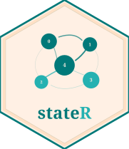

Markov transition probabilities
Source:vignettes/markov-transitions.Rmd
markov-transitions.RmdWhat is a Markov transition?
A first-order Markov chain models the brain state sequence as a memoryless process: the probability of entering state at time depends only on the current state at time , not on any earlier history.
clusters_markov() estimates these transition
probabilities empirically from observed state sequences. For each
subject (or group), it:
- Lags the state sequence by one time point to create source–target pairs.
- Counts every observed
source → targettransition. - Normalises by the total number of transitions out of each source state, giving a row-stochastic estimate of the transition matrix.
The result captures which states the brain tends to move to and from, and how probable each transition is — information that fractional occupancy alone cannot provide.
Simulated data
set.seed(99)
tbl <- tibble::tibble(
subject = rep(paste0("sub-", 1:8), each = 60),
group = rep(c("term", "preterm"), each = 4 * 60),
time = rep(seq_len(60), 8),
state = sample(0:3, 8 * 60, replace = TRUE,
prob = c(0.35, 0.25, 0.25, 0.15))
)Computing transitions
trans <- clusters_markov(
tbl = tbl,
vars = c("subject", "group"),
cVar = "state",
sortBy = "time",
groupBy = "subject",
remIntra = FALSE
)
trans
#> # A tibble: 16 × 4
#> # Groups: tag, source, target [16]
#> source target tag data
#> <int> <int> <chr> <list>
#> 1 0 0 0_0 <tibble [8 × 5]>
#> 2 0 1 0_1 <tibble [8 × 5]>
#> 3 0 2 0_2 <tibble [8 × 5]>
#> 4 0 3 0_3 <tibble [7 × 5]>
#> 5 1 0 1_0 <tibble [8 × 5]>
#> 6 1 1 1_1 <tibble [8 × 5]>
#> 7 1 2 1_2 <tibble [8 × 5]>
#> 8 1 3 1_3 <tibble [7 × 5]>
#> 9 2 0 2_0 <tibble [8 × 5]>
#> 10 2 1 2_1 <tibble [8 × 5]>
#> 11 2 2 2_2 <tibble [7 × 5]>
#> 12 2 3 2_3 <tibble [8 × 5]>
#> 13 3 0 3_0 <tibble [8 × 5]>
#> 14 3 1 3_1 <tibble [8 × 5]>
#> 15 3 2 3_2 <tibble [7 × 5]>
#> 16 3 3 3_3 <tibble [7 × 5]>The output is nested by tag — one row per unique
source–target pair. Unnest to see the per-subject probabilities:
trans_long <- trans %>%
tidyr::unnest(data)
trans_long %>%
dplyr::select(tag, source, target, subject, group, nCount) %>%
head(16)
#> # A tibble: 16 × 6
#> # Groups: tag, source, target [2]
#> tag source target subject group nCount
#> <chr> <int> <int> <chr> <chr> <table[1d]>
#> 1 0_0 0 0 sub-1 term 0.3333333
#> 2 0_0 0 0 sub-2 term 0.3600000
#> 3 0_0 0 0 sub-3 term 0.2500000
#> 4 0_0 0 0 sub-4 term 0.3809524
#> 5 0_0 0 0 sub-5 preterm 0.1250000
#> 6 0_0 0 0 sub-6 preterm 0.3333333
#> 7 0_0 0 0 sub-7 preterm 0.4000000
#> 8 0_0 0 0 sub-8 preterm 0.2631579
#> 9 0_1 0 1 sub-1 term 0.2777778
#> 10 0_1 0 1 sub-2 term 0.3200000
#> 11 0_1 0 1 sub-3 term 0.1875000
#> 12 0_1 0 1 sub-4 term 0.2857143
#> 13 0_1 0 1 sub-5 preterm 0.3750000
#> 14 0_1 0 1 sub-6 preterm 0.3333333
#> 15 0_1 0 1 sub-7 preterm 0.3666667
#> 16 0_1 0 1 sub-8 preterm 0.4210526The transition matrix
To reconstruct the full
transition matrix averaged across subjects, summarise
nCount by source and target:
trans_long %>%
dplyr::group_by(source, target) %>%
dplyr::summarise(mean_prob = mean(nCount), .groups = "drop") %>%
tidyr::pivot_wider(
names_from = target,
values_from = mean_prob,
names_prefix = "to_"
) %>%
dplyr::arrange(source)
#> # A tibble: 4 × 5
#> source to_0 to_1 to_2 to_3
#> <int> <dbl> <dbl> <dbl> <dbl>
#> 1 0 0.306 0.321 0.262 0.127
#> 2 1 0.346 0.245 0.236 0.198
#> 3 2 0.419 0.270 0.172 0.160
#> 4 3 0.387 0.267 0.277 0.119Each row sums to 1 (within rounding error): given the brain is in
state source, the row entries are the probabilities of
transitioning to each possible target on the next time
step.
Removing self-transitions
By default remIntra = FALSE, so self-transitions (state
→ state
)
are included. These reflect dwell time in the transition matrix. If you
want to study only genuine state changes, you can filter
self-transitions out of the unnested output using
source != target:
trans_change <- clusters_markov(
tbl = tbl,
vars = c("subject", "group"),
cVar = "state",
sortBy = "time",
groupBy = "subject",
remIntra = FALSE
)
# Filter out self-transitions manually (source == target)
trans_change %>%
tidyr::unnest(data) %>%
dplyr::filter(source != target) %>%
dplyr::group_by(tag) %>%
dplyr::summarise(mean_prob = mean(nCount, na.rm = TRUE), .groups = "drop") %>%
dplyr::arrange(dplyr::desc(mean_prob))
#> # A tibble: 12 × 2
#> tag mean_prob
#> <chr> <dbl>
#> 1 2_0 0.419
#> 2 3_0 0.387
#> 3 1_0 0.346
#> 4 0_1 0.321
#> 5 3_2 0.277
#> 6 2_1 0.270
#> 7 3_1 0.267
#> 8 0_2 0.262
#> 9 1_2 0.236
#> 10 1_3 0.198
#> 11 2_3 0.160
#> 12 0_3 0.127With remIntra = TRUE, rows no longer sum to 1 because
the diagonal has been removed and the remaining probabilities are
re-normalised over inter-state transitions only.
The tag convention
Transition tags follow the
"<source>_<target>" pattern. For a four-state
system (states 0–3), there are 16 possible tags including
self-transitions, or 12 excluding them.
To work with a specific transition of interest:
trans %>%
tidyr::unnest(data) %>%
dplyr::filter(tag == "1_0") %>%
dplyr::select(subject, group, nCount)
#> Adding missing grouping variables: `tag`, `source`, `target`
#> # A tibble: 8 × 6
#> # Groups: tag, source, target [1]
#> tag source target subject group nCount
#> <chr> <int> <int> <chr> <chr> <table[1d]>
#> 1 1_0 1 0 sub-1 term 0.1333333
#> 2 1_0 1 0 sub-2 term 0.4666667
#> 3 1_0 1 0 sub-3 term 0.3333333
#> 4 1_0 1 0 sub-4 term 0.3125000
#> 5 1_0 1 0 sub-5 preterm 0.3043478
#> 6 1_0 1 0 sub-6 preterm 0.3333333
#> 7 1_0 1 0 sub-7 preterm 0.5714286
#> 8 1_0 1 0 sub-8 preterm 0.3125000
vars vs groupBy
Two arguments control grouping in clusters_markov(), and
it is worth understanding the distinction:
-
groupBy— the variable used to compute transitions. Lag and pair operations are performed within each level ofgroupBy. This should always be the subject (or session) identifier, so that transitions are never computed across subjects. -
vars— the variables carried through to the output. Include everything you want available for downstream analysis: subject ID, group, covariates.groupByshould be a subset of (or equal to)vars.
# groupBy = "subject" ensures no cross-subject transitions are counted.
# vars includes "group" so group membership is available for testing.
clusters_markov(
tbl = tbl,
vars = c("subject", "group"),
cVar = "state",
sortBy = "time",
groupBy = "subject"
) %>%
tidyr::unnest(data) %>%
dplyr::filter(tag == "0_1") %>%
dplyr::select(subject, group, nCount)
#> Adding missing grouping variables: `tag`, `source`, `target`
#> # A tibble: 8 × 6
#> # Groups: tag, source, target [1]
#> tag source target subject group nCount
#> <chr> <int> <int> <chr> <chr> <table[1d]>
#> 1 0_1 0 1 sub-1 term 0.2777778
#> 2 0_1 0 1 sub-2 term 0.3200000
#> 3 0_1 0 1 sub-3 term 0.1875000
#> 4 0_1 0 1 sub-4 term 0.2857143
#> 5 0_1 0 1 sub-5 preterm 0.3750000
#> 6 0_1 0 1 sub-6 preterm 0.3333333
#> 7 0_1 0 1 sub-7 preterm 0.3666667
#> 8 0_1 0 1 sub-8 preterm 0.4210526Further reading
-
vignette("getting-started")— fractional occupancy and dwell time -
vignette("grouped-pipeline")— applying permutation tests across all transitions ?clusters_markov